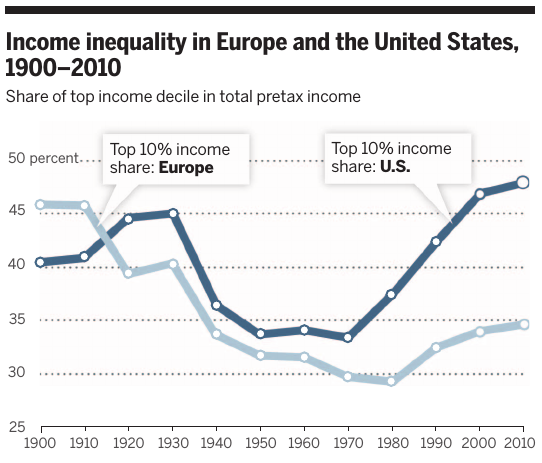
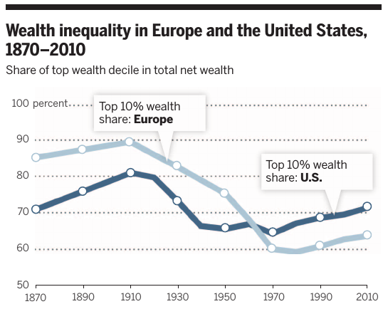
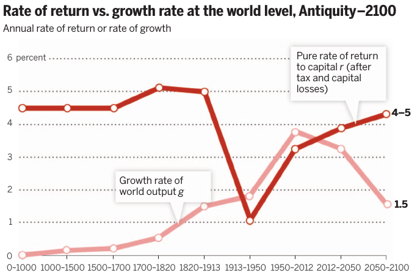

Piketty's Capital
ECON 499: Economics of Inequality
Winter 2018
Capital in the Twenty-First Century
- Thomas Piketty (2013)
- 700 pages
- Past, present, and future of inequality
- #1 on the New York Times Best Seller list
Income vs Wealth
Income is a flow variable, measured in units per unit of time
- Dollars per hour, thousands of dollars per year, etc
Wealth is a stock variable, measured as a total amount
- Amount of money in your bank account
- Value of assets you own
Capital income
- Wealth is a source of income
- S=I
- Capital income increases as wealth increases
3 facts
- Labor income inequality is higher in the US than in Europe, opposite of 1900
- Wealth inequality more concentrated than income inequality
- Wealth to income ratios are U-shaped in Europe, flat in US



The United States is the land of booming top labor incomes; Europe is the land of booming wealth (albeit with a lower wealth concentration than in the United States). These are distinct phenomena, involving different economic mechanisms and different parts of the developed world.
Piketty's "first fundamental law of capitalism"
\[\text{Capital share of income}=\alpha =r\dfrac{K}{Y}\]
- Just a definition
- \(r\) is the return on capital
- \(rK\) is capital income per year
- \(rK/Y\) is share of capital income to total income (Y)
Piketty's "second fundamental law of capitalism"
\[\dfrac{\bar{K}}{\bar{Y}} = \dfrac{s}{g}\]
- \(s\) is the net savings rate
- \(g\) long-run growth rate
- \(Y\) is net income
Example
\(s=0.10\)
- \(g=0.03\):
\[\dfrac{\bar{K}}{\bar{Y}} = \dfrac{0.1}{0.03} = 3.33\]
- \(g=0.015\):
\[\dfrac{\bar{K}}{\bar{Y}} = \dfrac{0.1}{0.015} = 6.66\]

US wealth/income ratio
Why is US not seeing accumulating wealth?
- Population growing faster in US (causes growth)
- Savings rate lower in US
\(r-g\)
- Suppose two people in society: one with capital income, one with labor income
- Labor income grows at rate \(g\)
- Capital income grows at rate \(r\)
- If \(r>g\), capital income accumulates faster than labor income
- Capital begets capital (part of capital income is saved), so wealth inequality increases

Putting it all together
- Lower growth rates cause \(K/Y\) to increase
- Capital share increases (\(rK/Y\))
- \(r>g\): capital incomes diverge from labor incomes
- Wealth more concentrated than labor income
Labor and capital
- Most of current inequality is caused by labor, not capital
- High wage-earners are able to save more of their incomes, accumulate capital
- We might expect top wage earners to transition to capital earners
First law
\[\alpha =r\dfrac{K}{Y}\] If \(K/Y\) increasing to steady state, will \(\alpha\) increase?
- If \(r\) goes down, then capital share of income may not decrease
- If \(r\) stays the same or goes up, then capital share will increase
What determines \(r\)?
- \(r\) is the return on capital
- With competitive markets, equal to the marginal productivity of capital (MPK)
- MPK is a function of level of capital (-) and technology (+)
- "Capital augmenting" technology can keep \(r\) high in the long run
- Solow, 2014:
There is no logical necessity for the rate of return to exceed the growth rate…but there is no invisible hand to steer a market economy away from this perversity.
Capitalism and inequality
- Piketty shows that there is no "law" of capitalism that ensures inequality will fall
- Capital income can be derived from skilled investing, but unskilled investing can earn high income if wealth is high
- Increasing wealth might imply increasing inherited wealth
Patrimonial capital
- Wealth is inherited from parents
- You can earn capital income simply because your parents earn capital income (no skills required!)
- This was the case for most of history, until 20th century
- Piketty argues that the 20th century is an anomoly, driven by negative capital shocks (world wars) and high growth (convergence)
- \(r>g\) implies a return to patrimonial capitalism, widening gulf between capital and labor
The reason why wealth today is not as unequally distributed as in the past is simply that not enough time has passed since 1945.